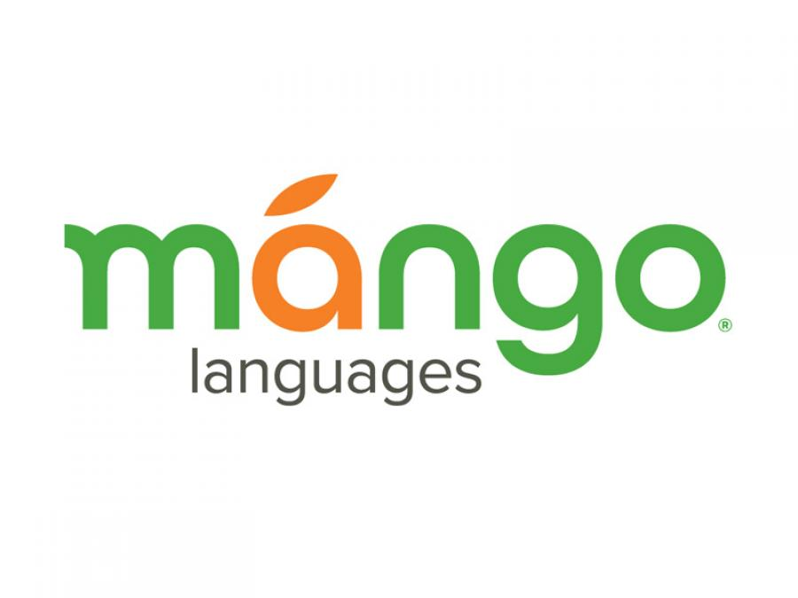

Odensebib.dk/ereolen
På eReolen kan du finde de klassiske TUREN GÅR TIL... som ebøger.
Her finder du også Krimier, Klassikere, Kærlighed, Realisme, Fantasy, Science fiction, Fagbøger, Biografier, Young adult, Børnebøger og meget andet.
På eReolen finder du både lydbøger og ebøger.
På Ereolens app kan du downloade bøger, den findes både på AppStore eller Google Play butikken.
Logind med dit lånenummer og den pinkode du bruger når du er på biblioteket
Du er klar til at låne og downloade bøgerne.
Odensebib.dk/eReolen Global
Tag lonely planet med på din tablet med eReolen global. Bibliotekets udlånesservice af lydbøger og ebøger på engelsk.
Foruden Rejseguides får du den nyeste engelske litteratur, som ofte ikke er oversat til dansk endnu. find den store samtidsroman, masser af fantasy, romance, historie, biografier, slægtsromaner, science fiction og meget andet.
På eReolen finder du både lydbøger og ebøger
download bøgerne med app'en Libby som findes på App store, Google play eller Windows store.
Odensebib.dk/rbdigital
Læs alle de magasiner du orker i flyveren og liggestolen med app'en RBDigital
Du finder her et bredt udvalg af mode, livsstil, sport, musik, outdoor, tech, hobby, historie, og buisness.
Find app'en RBDigital på App Store eller i Google Play butikken.

Odensebib.dk/mangolanguages
Mango Languages tilbyder sprogkurser i over 70 sprog fra hele verden. Et godt sted at starte, hvis du vil erhverve indsigt i sprog og kultur, inden turen går til et nyt rejsemål. Kurserne er for begyndere.
Find app'en Mango Languages i App Store eller Google Play butikken.